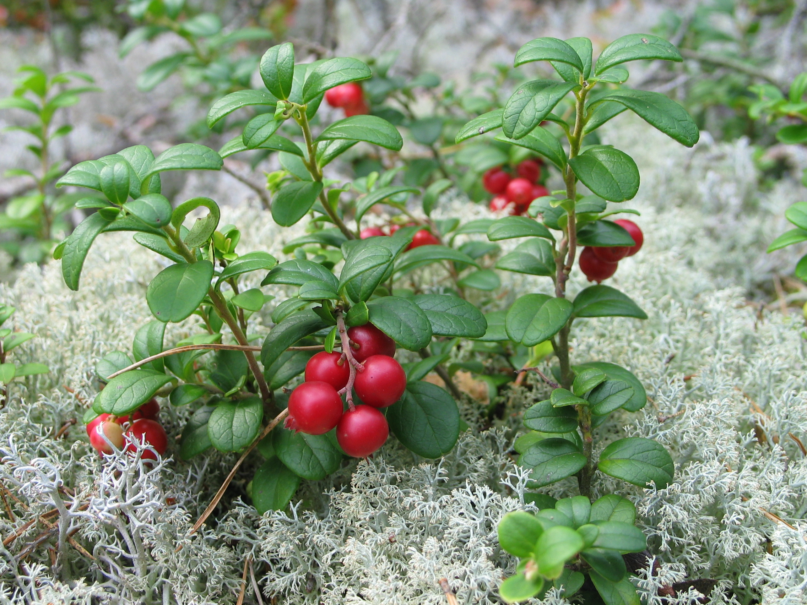
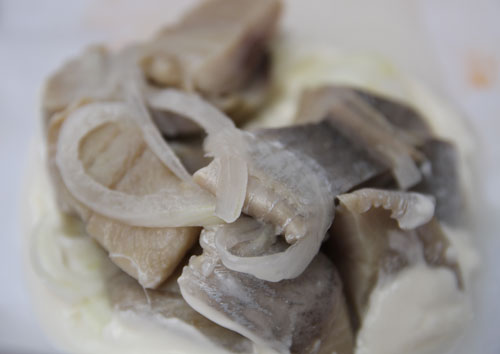
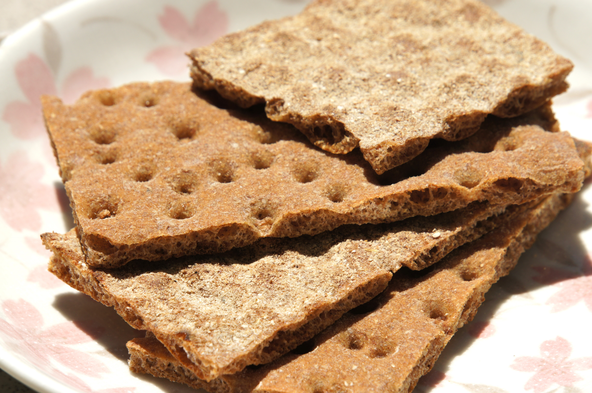
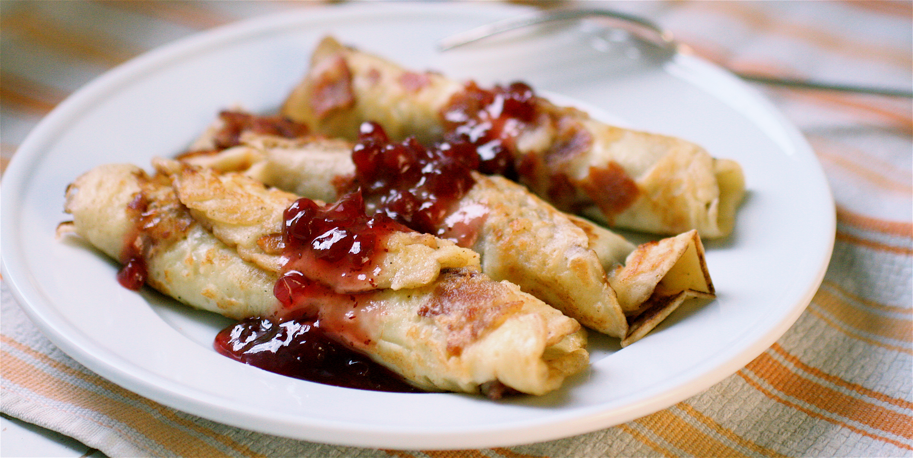

Listen to sweet Swedish National Anthem while you learn by clicking
here
Stockholm (Swedish pronunciation: [ˈstɔkːˈɔlm, ˈstɔkːˈhɔlm ˈstɔkːɔlm])
is the capital of Sweden and the most populous city in Scandinavia, with
905,184 people living in the municipality,[2] approximately 1.4 million
in the urban area,[4] and a total population close to 2.2 million in
the metropolitan area.[2] The city is spread across 14 islands on the
coast in the southeast of Sweden at the mouth of Lake Mälaren, by the
Stockholm archipelago and the Baltic sea. The area has been settled
since the Stone Age, in the 6th millennium BC, and was founded as a city
in 1252 by Birger Jarl.Stockholm (Swedish pronunciation: [ˈstɔkːˈɔlm,
ˈstɔkːˈhɔlm ˈstɔkːɔlm]) is the capital of Sweden and the most populous
city in Scandinavia, with 905,184 people living in the municipality,[2]
approximately 1.4 million in the urban area,[4] and a total population
close to 2.2 million in the metropolitan area.[2] The city is spread
across 14 islands on the coast in the southeast of Sweden at the mouth
of Lake Mälaren, by the Stockholm archipelago and the Baltic sea. The
area has been settled since the Stone Age, in the 6th millennium BC, and
was founded as a city in 1252 by Birger Jarl.
Vasa Museum
a must see museum of coolness.
Djurgarden
also known as the Kungliga Djurgarden, or The Royal Game Park, is another must see.
Gamla stan
also know as The Old Town, this 13th century town still consists of medieval
alleyways, cobblestone streets, and archaic architecture.
Drottningholm Palace
No trip would be complete without a visit to the Swedish Royal Family.
Besides, it also sounds like Nottingham.

Just like ketchup and mustard,
lingonberry jam
is widely used to accompany a variety of dishes, from meatballs and pancakes to
porridge and black pudding.
But despite its sweetness, it is rarely used on bread. Thanks to the Right
of Public Access (
Allemansrätten),
which gives everyone the freedom to roam and enjoy nature, many Swedes grow
up picking lingonberries in the forest, and using these tiny tart red fruits
to make a jam-like preserve.

You might swap meatballs (köttbullar) for mini sausages (prinskorvar)
or pick cured salmon (gravad lax) rather than smoked, but your smorgasbord
wouldn’t be complete without pickled herring (sill). This fishy favourite
remains the basis of every typical Swedish buffet. With an abundance of
herring in both the North and Baltic Seas, Swedes have been pickling
since the Middle Ages, mainly as a way of preserving the fish for storage and transportation.

In addition to bread and butter, you’ll often find a type of crispbread
(knäckebröd) served alongside your main meal. This is what the Swedes
tend to reach for. Once considered poor man’s food, crispbread has been
baked in Sweden for over 500 years, can last for at least a year if stored
properly, and remains among the most versatile edible products. The Swedish
National Board of Health and Welfare (Socialstyrelsen) ran a campaign in
the 1970s suggesting Swedes should eat six to eight slices of bread a day, including crispbread.

Nordic pancakes are similar to the French-style crêpes. In some Nordic
countries, they are served with jam or fruit, especially lingonberries
(or the butter from that fruit) as a dessert with a variety of savoury fillings.
Traditional Swedish variations can be exotic. Beside the usual thin pancakes,
called pannkakor, which resembles the French crêpes and, often served with
whipped cream and jam, are traditionally eaten for lunch on Thursdays
with pea soup, the Swedish cuisine has plättar—very small pancakes,
which resemble tiny English pancakes, and are usually fried in a special
pan called a "plättlagg", a sort of normal size frying pan with indentations
to allow for several (normally seven) to be made at once.